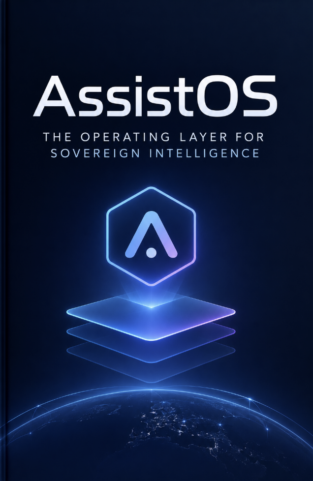

Technology · Axiologic Research Editions
AssistOS
The Operating Layer for Sovereign Intelligence
See the AI transition not as a race for the next model, but as a choice about who owns the workspace in which intelligence acts.
A computer that remembers who you are working with
AssistOS begins from a familiar irritation: today’s AI tools are impressive in isolation and exhausting in combination. A model can draft, another can search, a third can execute code; files live elsewhere, permissions live elsewhere again, and each new service asks the user to reconstruct context that already belongs to their work. The book’s wager is that this fragmentation is not an inconvenience at the edge of the AI era. It is the missing layer at its centre.
Sînică Alboaie frames AssistOS as an operating layer between the traditional operating system, the agent platform, the collaborative workspace and the marketplace. Its job is not to make one model omniscient. It is to make intelligence installable, portable, governable and useful across devices, organisations and models. That wording matters. The book repeatedly separates a product direction from a completed product, and a market thesis from a promise. This is a proposal for infrastructure that earns trust gradually.
The opening analogy is Linux, used carefully rather than triumphantly. The value of an open computing layer was never that it owned every processor or application; it made a durable substrate on which different actors could build. AssistOS applies this lesson to local models and agents. The interesting question is not whether an assistant can produce a fluent answer today. It is whether a person can move a process, its evidence, its permissions and its history tomorrow, between a laptop, a team, a cloud provider or a different model, without starting from zero.
Three questions the book takes seriously
What should an agent be allowed to do? The answer is not “whatever the prompt implies.” AssistOS treats agency as an allocation of authority: a system must know which files, tools and decisions are in scope, how a result is checked, and when a human must approve the next step. This makes the book useful for readers tired of demos that confuse autonomy with an absence of boundaries.
Why bring models closer to the user? The book connects local execution to resilience, privacy and economic choice. Local models do not solve every problem, and cloud services remain useful. But an architecture that can use local resources gives people and organisations a meaningful alternative when connectivity, regulation, cost or confidentiality changes the terms of work.
What makes a workspace more than a chat window? A chat ends when its context disappears. A workshop leaves behind versioned artefacts, reusable procedures, source material and a trail of decisions. AssistOS imagines agents as participants in that workshop, not as theatrical personalities, but as tools that can be installed, qualified and held accountable.
The promise is continuity: human work should outlast a model, a vendor or an interface.
The missing layer
This is a book for builders and decision-makers who want a vocabulary larger than “agent” and “copilot.” It looks at the practical seam where tools, memory, security, packages and people meet. It is also candid about uncertainty: some components are operational, others are under development, and others remain research directions. That restraint gives the vision more texture than a roadmap written as inevitability.
you are designing enterprise AI, investing in the infrastructure around local models, or simply suspect that the future computer ought to be more than a browser tab attached to a remote model. The book does not ask you to believe that AssistOS is already the answer. It asks the better question: if agents become ordinary colleagues in digital work, what kind of operating layer would let us remain authors of the work?